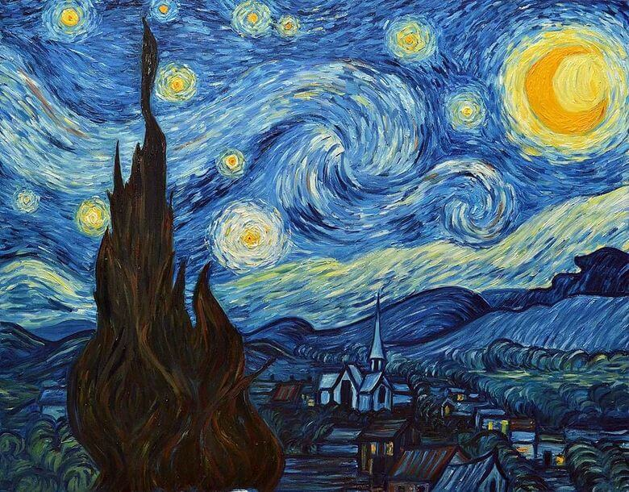
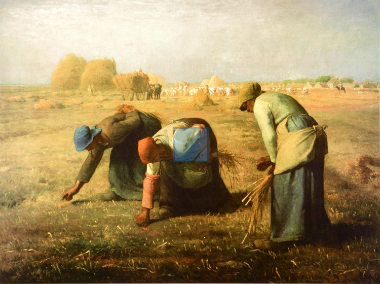

Best 3 Art Gallery
세계 미술품 중 대표하여 3가지 작품을 표현함.

< 별이 빛나는 밤 >
빈센트 반 고흐의 가장 유명한 작품 중 하나로
<별이 빛나는 빛나는 밤> 이라고 하며 1889년 생
레미의 요양원에서 그렸으며 현재 뉴욕현대미술관 소유다.

< 이삭 줍는 여인들 >
장프랑수아 밀레가 1857년에 완성한 유화이다.
현재 프랑스 파리의 오르세 미술관에 소장되어 있다.
수확이 끝난 밀 들판에서 이삭을 줍는 모습이다.
<이삭줍는 여인들> 이라는 작품이다.

< 최후의 만찬 >
레오나르도 다 빈치의 템페라 벽화에 그려진 <최후의 만찬>
밀라노의 산타 마리아 델레 그라치에 성당에 소장되어 있다.